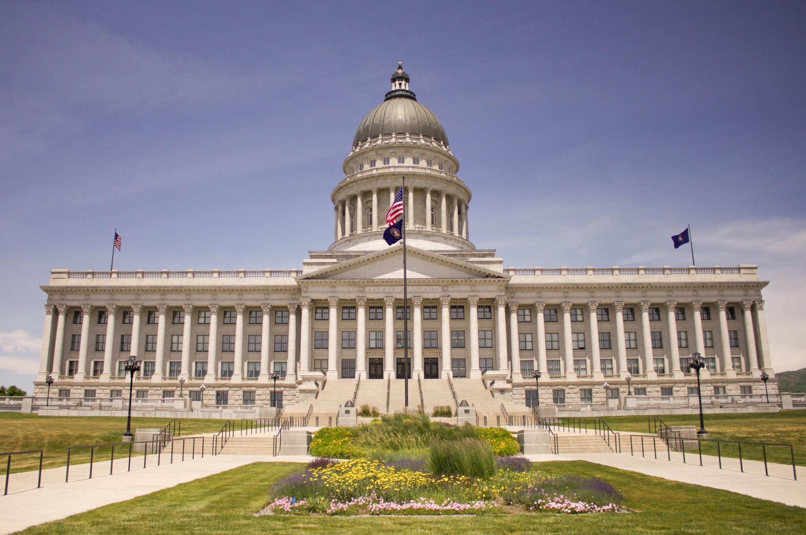
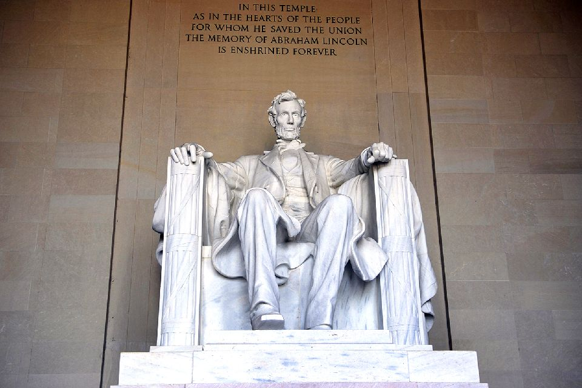

Le Washington Monument se dresse majestueusement au bout du Washington Mall, en face du Capitole. L'obélisque de 169 mètres, fait de marbre, de granit et de grès, commémore George Washington, premier président des États-Unis et général de l'armée continentale pendant la guerre d'indépendance. Le monument a été ouvert au public en 1888 et est devenu un symbole de Washington, DC, ainsi que de la nation.
Le monument de Washington mesure 169 mètres de haut au bout du bassin réfléchissant, ce qui est une belle feuille pour la structure blanche et élégante. Conçu par Robert Mills, il s’agit du plus haut bâtiment du monde lorsqu’il a ouvert au public en 1888, titre qui a rapidement été enlevé par la tour Eiffel de Paris en 1889. Les murs du Monument ont 15 pieds d’épaisseur à la base de la structure. Effilée à 15 "au pont d'observation. 50 drapeaux entourent le monument, un pour chaque état de l'union.
Aujourd'hui, les visiteurs du monde entier affluent vers le monument, ce qui en fait l'un des sites les plus populaires de Washington. Comme beaucoup d'attractions de Washington DC, le Washington Monument est gratuit pour le public. Le monument est ouvert aux visiteurs tous les jours, sauf le 25 décembre. Les visiteurs peuvent emprunter les 889 marches qui mènent au sommet ou emprunter l'ascenseur en 60 secondes. L'admission se fait par billets à l’heure déterminée, distribués selon le principe du premier arrivé, premier servi. Il est recommandé de faire la queue pour les billets lorsque le guichet des billets ouvre à 8 heures. Le monument a une boutique de cadeaux, des toilettes et un snack-bar. La station de métro la plus proche du Monument est la station Smithsonian.
on peut y monter gratuitement et si on a la patience d’attendre, il y a une petite cabine de ranger au pied de la tour où on peut retirer des billets gratuits, ou on peut réserver en ligne. Tout autour flottent de nombreux drapeaux américains qui claquent au vent. De chaque côté de ce monument, deux autres bâtiments : d’un côté, le Lincoln Memorial et de l’autre, le Capitole.
